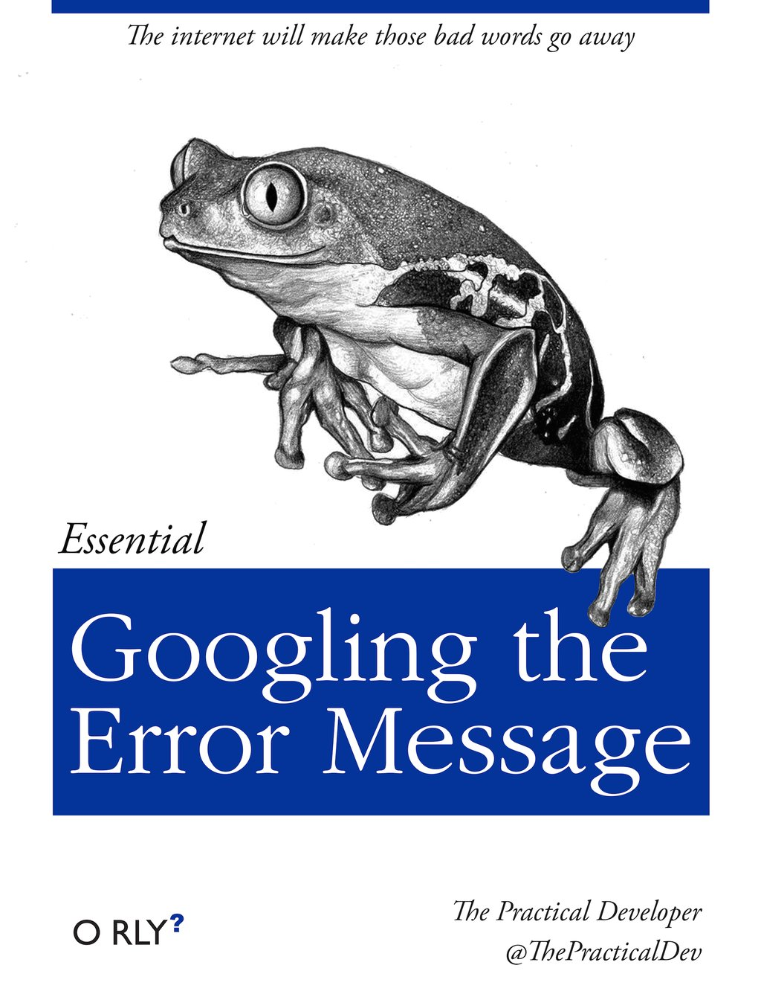
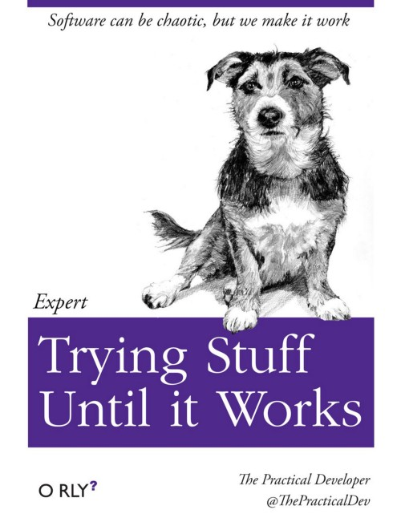

Resources
1 Getting Help
1.1 Slack
All course communication will be managed through Slack - Sign up HERE
Watch this 2-minute video to see what Slack is all about:
You can use Slack to:
- Ask general questions.
- Ask for help with an assignment.
- Send direct, private messages to each other or the instructors (just like email…but better!)
Asking for help on Slack:
You can post questions on slack and receive quick responses. This also enables other students to see answers to common questions. Be specific - if your code has an error you don’t understand, include the code and the error message in your question.
1.2 Office hours
Please watch this video:
Office hours are set times dedicated to all of you. This means that I will be in my office (wistfully) waiting for you to come by with whatever questions you have. This is the best and easiest way to find me outside of class and the best chance for discussing class material and concerns (or anything really). Please come by!
This can be a difficult class - do not suffer in silence! Come talk to me!
1.3 Tutoring hours
Similar to office hours, your class tutors will each hold a specific period of time each week dedicated to help you will course assignments. Please don’t make your tutors sit and do emails for two hours - come by and ask for help!
1.4 Library Services
While the University Library is not a stand in for TAs, you can schedule a consultation for general help with Coding, Programming, Data, Statistical, and GIS. See more at https://academiccommons.gwu.edu/writing-research-help
2 Doing stuff in R
You will inevitably run into problems; things won’t work the way you expect, and you’ll get lots of confusing error messages. When this happens, many people turn to the following problem-solving approaches:
  
While these can be useful, there are also lots of excellent and free resources available - here are a few:
2.1 Programming in R
- Grolemund, Garrett. “Hands-On Programming with R” [free online], [buy on amazon]
- Peng, Roger D. “R Programming for Data Science” [online - pay what you want]
2.2 Data Analysis in R
- Grolemund, Garrett and Wickham, Hadley. “R for Data Science” [free online], [buy on amazon]
- Peng, Roger D. “Exploratory Data Analysis with R” [online - pay what you want]
2.3 Data Visualization
- Healy, Kieran. “Data Visualization: A practical introduction” [free online], [buy on amazon]
- Wilke, Claus O. “Fundamentals of Data Visualization” [free online], [buy on amazon]
- Check out this awesome collection of past “Tidy Tuesday” challenges
- I highly recommend watching this video on how humans see data, by John Rauser. It’s one of the best overviews I’ve seen on how to exploit the psychology of how our brains interpret images to make effective visualizations.
2.4 Data Visualization Guides
2.5 Plotting guides with ggplot2
- RStudio
ggplot2Cheatsheet - Tidyverse
ggplot2reference guide - R Cookbook for
ggplot2 - Top 50
ggplot2visualizations - ggThemeAssist: Package for customizing plot themes and layout
2.6 RStudio Cheatsheets
2.7 RMarkdown
- 60 second markdown guide
- 10 minute markdown tutorial
- Markdown It: Quickly demo Markdown code.
- Table generator: Create tables and get export code for multiple formats.
- CMU RMarkdown guide (detailed)
3 Other
3.1 Datasets
- The
dslabsR package contains many excellent datasets. - Past “Tidy Tuesday” challenges
- Past “Makeover Monday” challenges
- Kaggle
- Google Dataset Search
- Tableau Community Forumss
- The “data is beautiful” reddit feed
3.2 Helpful Tutorials
3.3 Inspiration
- An Incomplete List of Females in Data Visualization, by Stephanie Evergreen
- The Links Between Open Science and Star Wars
3.4 Music
I find having some background music helpful for coding. My favorite channel for coding is Chillhop Lofi Hip Hop
3.5 Other other
- You’ll all have to give talks one day - make sure you start it right: “How to start a speech”
George Washington University | School of Engineering & Applied Science
Dr. John Paul Helveston | jph@gwu.edu | Mondays | 6:10–8:40 PM | Phillips Hall 108 | |
This work is licensed under a Creative Commons Attribution 4.0 International License.
See the licensing page for more details about copyright information.
Content 2019 John Paul Helveston